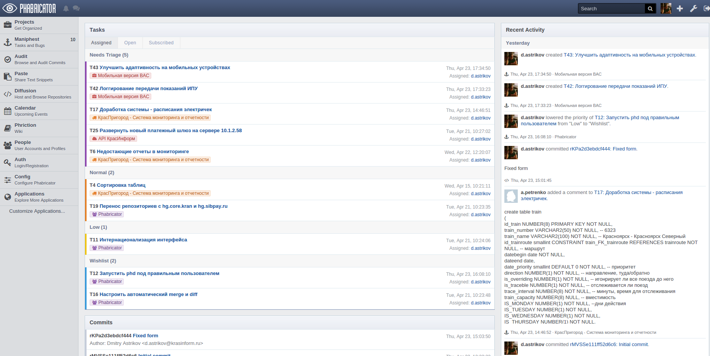
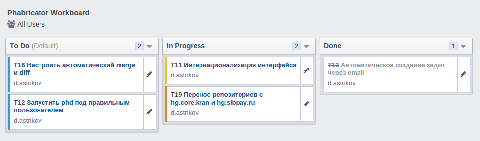
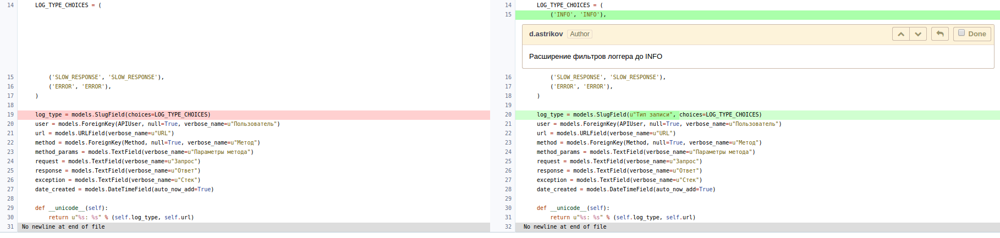

Phabricator & Sentry. Или как разрабатывать программные продукты проще.
Доклад подготовлен Дмитрием Астриковым

ЗАО "КрасИнформ". www.krasinform.ru
Доклад подготовлен Дмитрием Астриковым
Phabricator - это комплексная opensource система для ведения IT проектов родом из Facebook
Он включает в себя большое количество плагинов, постоянно развивается, используется в ряде очень крупных IT компаний: Facebook, Discuss, Dropbox, Haskell, DeviantArt и др.
В центре системы лежит сущность Проекта, с ней тесно интегрированы все остальные плагины и подсистемы.
Итак, функциональность, которая может нам пригодиться:
Многим понравился принцип работы в Trello, но не нравилось что критически важная информация хранится на "вражеских" серверах в облаке. Phabricator живет на наших собственных серверах и закрыт извне (на самом деле нет).
Функциональные особенности
Code-review работает даже в микрокомандах от 2-ух человек.
Весь цикл сопровождается уведомлениями по почте и в ленте активности
Преимущества
Трудно понять преимущества code-review не попробовав.

ravenClient = new RavenClient("...");
try
{
int i2 = 0;
int i = 10 / i2;
}
catch (Exception e)
{
ravenClient.CaptureException(e);
}